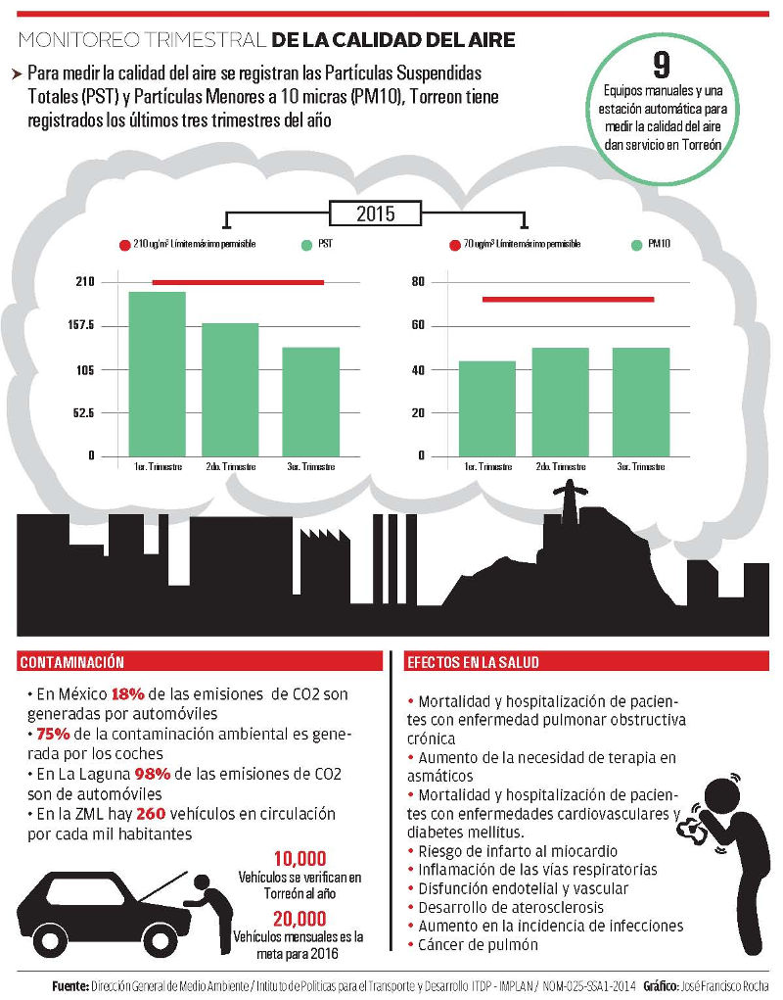

La contaminación del aire continúa siendo uno de los problemas de salud pública más importantes que afecta a la población a nivel nacional.
Debido a que la Comarca Lagunera es una zona altamente industrializada y cada vez con mayor concentración vehicular, mejorar la calidad del aire se vuelve indispensable para la salud de toda la población.
Desde el 2010 Torreón forma parte del programa para mejorar la calidad del aire "Pro Aire Laguna".
A la fecha, el municipio cuenta con 9 equipos manuales y una estación automática para medir la calidad del aire en Partículas Suspendidas Totales (PST) y Partículas Menores a 10 micras (PM10), en lo que va del año los resultados son significativos.
Los efectos de las partículas sobre cambios en la función pulmonar están ampliamente documentados en personas asmáticas y no asmáticas.
En 2015, de acuerdo con las mediciones semanales, los meses donde la ciudad registró una contaminación por encima de la norma, fueron febrero, marzo, abril y agosto.
A nivel trimestral, el periodo de mayor contaminación fue entre enero y abril, debido a que en la temporada de frío la inversión térmica provoca mayor concentración de partículas contaminantes.
Las estadísticas mensuales de la Dirección General de Medio Ambiente, revelan que en algunos puntos de la ciudad donde se realizan mediciones con equipos manuales, es mayor la contaminación que en otros.
Por ejemplo: en el monitoreo realizado en la Escuela Secundaria General No. 3 se presentó 42% de días fuera de la norma en PST. Y en la Escuela Secundaria Técnica No. 83, fueron 43% de días fuera de la norma en PM10.
Efectos sobre la salud
El espectro de efectos en la salud por la contaminación del aire es amplio, de acuerdo con la Norma Oficial Mexicana de Salud 025, pero afectan en particular a los sistemas respiratorio y cardiovascular.
Toda la población puede ser afectada, aunque la susceptibilidad puede variar con el estado de salud o la edad, siendo los niños menores de 5 años, los adultos mayores de 65 y las personas con padecimientos previos, los grupos de mayor riesgo.
Los eventos más documentados son: la mortalidad y la hospitalización de pacientes con enfermedad pulmonar obstructiva crónica (EPOC), exacerbación de los síntomas y aumento de la necesidad de terapia en asmáticos, así como mortalidad y hospitalización de pacientes con enfermedades cardiovasculares y diabetes mellitus.

También se presentó el aumento del riesgo de infarto al miocardio, inflamación de las vías respiratorias, inflamación sistémica, disfunción endotelial y vascular, desarrollo de aterosclerosis, aumento en la incidencia de infecciones y cáncer de pulmón, entre otros.
Los niveles actuales de PM10 y PM2.5 en varias ciudades del país, se han asociado con reducciones agudas en el volumen espiratorio forzado del primer segundo (FEV1) y en la capacidad vital forzada (FVC), según lo informa la Norma Oficial Mexicana.
Sin embargo, hay evidencia de que la función pulmonar mejora cuando la exposición se reduce.
Con una disminución neta de 10 μg/m3 (microgramos por metros cúbicos) de PM10 por un período de 10 años, se reduce la incidencia de algunos padecimientos respiratorios en 9%.
Susana Estens de la Garza, directora de Medio Ambiente, comentó que las partículas menores a 0.1 micras (PM0.1) tienen una mayor capacidad de traspasar la membrana que está entre el alveolo y el capilar.
Una vez que pasa el capilar entra al torrente sanguíneo y los contaminantes se dispersan por todo el cuerpo, "por eso lo que respiramos incide directamente en nuestra salud".
La verificación vehicular
Para la directora, la contaminación ambiental debe ser una responsabilidad compartida. No sólo se trata de que el gobierno imponga leyes, se tiene que socializar y difundir para que no se sienta como una imposición.
Necesariamente la reducción de la contaminación va de la mano con el Programa de Verificación Vehicular, bajo el entendido de que "si tu carro contamina, tienes que pagar", expresó la Química.
Aún cuando los automóviles se encuentren afinados y en las mejores condiciones físico/mecánicas, contaminan.
"Porque en contaminación del aire, lo que más incide y más posibilidades tiene de mejorar, es la combustión de hidrocarburos".
"Esto tiene que ir de la mano con la implementación de un sistema de transporte de calidad, con el Metrobús y con el fomento a la movilidad sustentable", indicó.
Susana Estens compartió que Torreón contará el próximo año con un Programa de Verificación nuevo a nivel nacional.
"La norma marca que la verificación tiene que ser con un dinamómetro, son unos rodillos sobre los cuáles se coloca el vehículo y se somete a una prueba de esfuerzo, esta prueba es más confiable y los municipios están obligados a aplicarla".
Actualmente el Municipio verifica 10,000 vehículos al año y con este programa se pretenden verificar 20,000 vehículos al mes.
La directora puntualizó la importancia de que la ciudadanía entienda la ecuación: Verificación = mejor calidad del aire = mejor salud.